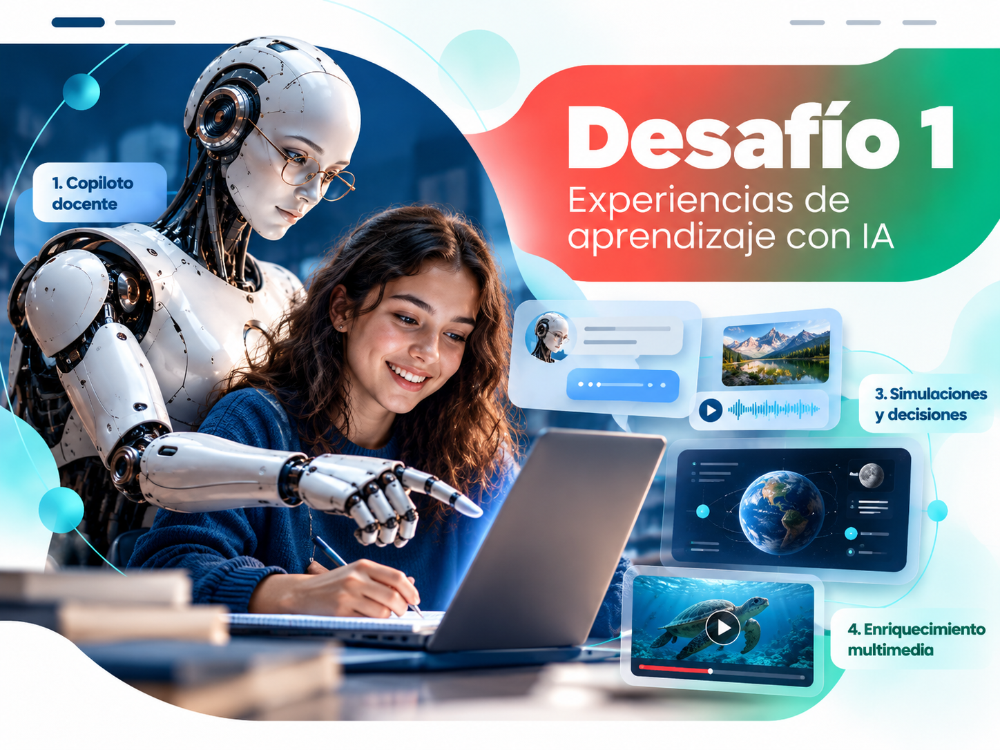

Cada desafío se vincula con una opción de TFI. Esta JAM es un laboratorio breve: elegí solamente UN desafío, UN camino dentro de ese desafío y UN nivel de exploración. No tenés que recorrer todo ni confirmar definitivamente tu TFI.
Todos los caminos y niveles son igualmente valiosos. Lo importante es crear, probar, transparentar el uso de IA y reflexionar.

DESAFÍO 1 · TFI A
De la clase que explico a la experiencia que transforma
¿Cómo transformar una actividad de clase concreta para que la IA amplíe la exploración, el diálogo o la creación de los estudiantes? No se trata de producir una presentación aislada: diseñá qué harán los estudiantes, cuándo interviene la IA y qué aprendizajes se esperan.
En tu práctica hay una dificultad concreta que los materiales habituales no resuelven bien. Prototipá un recurso breve que alguien pueda usar para comprender, practicar, revisar o acceder a un contenido; agregá una pequeña guía de uso.
Partí de una pregunta sobre IA y educación. Podés construir un instrumento, comparar modelos, examinar evidencias o visualizar datos. No necesitás hacer una investigación completa: alcanza con una exploración responsable y bien delimitada.
La integración de IA genera decisiones éticas, pedagógicas, políticas, económicas, culturales y ambientales. Elegí una tensión institucional y creá un recurso que ayude a comprenderla, comparar prácticas o promover una deliberación informada.
Pensá en colegas reales: docentes con experiencia, poco tiempo y necesidades diferentes. Diseñá una pequeña experiencia formativa que los haga experimentar, resolver un problema, conversar y llevarse algo útil; no una demostración interminable de aplicaciones.